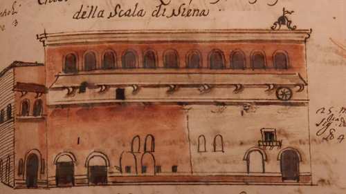

|
| |
Il 22 gennaio 1729, Girolamo Macchi, Scrittore Maggiore del Santa Maria della Scala, redige un documento nel quale ripercorre le tappe principali della sua vita: abbandonato come gittatello all'ospedale (nasce nel 1648) da fanciullo lavorò nell’archivio, poi nel granaio, quindi come aiutante dello scrittore maggiore, poi ancora come "scrittore di grancie e ministro de’ granai", finché nel 1684, ricoprì lui stesso l'importante ruolo di Archivista e Scrittore Maggiore (oggi sarebbe un moderno revisore dei conti), carica ricoperta fino alla morte.

Lo Spedale Santa Maria della Scala
dipinto dal Macchi
In sei volumi di Memorie, e nel più agile compendio Origini dello Spedale, Macchi traccia la storia, talvolta fantasiosa, dell’ente ospedaliero, ma in realtà si occupa di tutta la città, raccontando aneddoti ed episodi, oltre a disegnare numerosi schizzi di particolari urbani.
Morto nel 1734, per testamento chiede di essere sepolto nella Chiesa della SS. Annunziata ed è lui, probabilmente, una delle tre mummie ritrovate nel 1999 e che ancora aspettano di essere visibili al pubblico insieme ai loro abiti, alle monete e alle medaglie, mandati a restaurare a Pisa. Non sappiamo se sono ritornate e dove siano.
|

 ACCADDE OGGI
ACCADDE OGGI